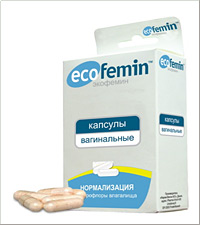

Урогенитальные инфекции широко распространены среди женщин. В клинических исследованиях было продемонстрировано, что интравагинальное введение пробиотиков способствует снижению роста патогенных микроорганизмов, оказывая благоприятное влияние на течение бактериального вагиноза и ряда инфекций мочевыводящих путей.
Урогенитальные инфекции (УГИ) широко распространены среди женщин. Распространенность УГИ достаточно высока — так, распространённость острого цистита в России, по расчётным данным, составляет 26-36 млн. случаев в год, 21-33% женщин детородного возраста переносят бактериальный вагиноз. Вторичные осложнения данных заболеваний приводят к бесплодию или повышению риска преждевременных родов. Несмотря на большую значимость данных инфекций, подходы к их терапии не претерпели значительных изменений за последние годы — так, основными препаратами в лечении УГИ остаются антибиотики и антимикотики, однако с ростом антибиотикорезистентности эффективность данных средств снижается, а при беременности их использование не всегда возможно.
Концепция защитной роли нормальной микрофлоры влагалища (в частности, лактобактерий) легла в основу терапии урогенитальных инфекций пробиотиками. Впервые эта концепция была сформулирована канадским урологом Andrew Bruce в начале 70-х гг. прошлого века. В последующем было показано, что штаммы лактобактерий могут колонизировать влагалище при применении вагинальных суппозиториев [1] и снижать риск возникновения инфекций мочевыводящих путей и вагинитов грибковой этиологии [2] и бактериального вагиноза [3].
Следует отметить, что микроэкосистема микрофлоры влагалища очень чувствительна к различным факторам, таким как гормональный статус, сексуальная активность, применение оральных контрацептивов, содержание гликогена, рН влагалища, терапия глюкокортикоидами, иммуносупрессивное лечение и т.д. [4, 5].
В клинических исследованиях было продемонстрировано, что интравагинальное введение пробиотиков способствует снижению роста патогенных микроорганизмов, оказывая благоприятное влияние на течение бактериального вагиноза и ряда инфекций мочевыводящих путей [6]. Так, установлено, что интравагинальное применение L. acidophilus в течение 6-12 дней или назначение внутрь L. acidophilus или L. rhamnosus GR-1 и L. fermentum RC-14 в течение 2 месяцев приводит к (1) излечению бактериального вагиноза, определяемому как 0-1 балл в соответствии с критериями R. Amsel и/или (2) снижению частоты возникновения рецидивов бактериального вагиноза и/или (3) увеличению числа лактобактерий во влагалище и восстановлению нормальной микрофлоры влагалища достоверно более часто по сравнению с использованием плацебо или отсутствием лечения [7].
Механизм воздействия пробиотиков на слизистую влагалища при урогенитальных инфекциях, предположительно, носит многофакторный характер и обусловлен продукцией молочной кислоты, бактерицидных веществ (антимикробных пептидов или бактериоцинов) и перекиси водорода, модификацией иммунного ответа (синтез IgA и противовоспалительных цитокинов), синтезом специфических молекул, способных снижать вируленторность патогенов и рядом других факторов [6]. Считается, что основным механизмом действия пробиотиков при УГИ у женщин является продукция биосурфактантов и коллаген-связывающих белков, что ведёт к подавлению адгезии патогенных бактерий, а именно, уропатогенов, чувствительных к биосурфактантам: E. coli 67, E. coli Hu734, E. faecalis 1131, E. faecalis 1396, P. mirabilis 28cii, P. aeruginosa AK1, S. epidermidis 3059, K. pneumonia 3a [6, 9, 11, 12, 13].
Уникальным пробиотическим препаратом для интравагинального применения, содержащим пробиотик Lactobacillus acidophilus и питательную среду для лактобактерий лактозу, является Экофемин (производитель Датская компания Фарма-Винчи А/С), зарегистрированный в России в 2008 г.

Экофемин применяется для:
- Нормализации микрофлоры влагалища;
- Предупреждения и лечения заболеваний, обусловленных нарушением вагинальной микрофлоры, в том числе в качестве второго этапа терапии бактериального вагиноза, неспецифического вагинита, гормонозависимого кольпита;
- Профилактики послеоперационных осложнений;
- Подготовки к плановым гинекологическим операциям;
- Подготовки к диагностическим инвазивным процедурам;
- Профилактики восходящей инфекции в родах во время предродовой подготовки;
- Восстановления микрофлоры влагалища после антибактериальной терапии.
Имеются данные исследований, свидетельствующие об эффективности и безопасности местного использования лактобактерией, в частности L. acidophilus, в лечении бактериального вагиноза.
Так, эффективность применения лиофилизированных L. acidophilus для лечения бактериального вагиноза продемонстрирована в двойном слепом плацебо-контролируемом исследовании с участием 60 пациенток с бактериальным вагинозом [14]. L. acidophilus назначались интравагинально в течение 6 дней (1 капсула 2 раза в день). По окончании применения вагинальных капсул с лактобактериями у 57% женщин в группе использования L. acidophilus отмечалось восстановление баланса вагинальной микрофлоры по сравнению с 0% в группе использования плацебо.
В открытом пилотном исследовании, проведённом в Италии и опубликованном в 2007 г., 40 женщинам с клиникой бактериального вагиноза в течение 6 дней назначались спринцевания раствором, содержащим L. acidophilus [15]. Микроскопическое исследование вагинальных мазков проводилось на момент установления диагноза, через 6 и 20 дней после окончания лечения. В соответствии с критериями Nugent бактериальный вагиноз был подтверждён у 52,5% женщин до лечения и только у 7,5% пациенток в периоде последующего наблюдения (20 дней после окончания лечения). После лечения отмечалось статистически достоверное снижение значения рН влагалища (у 85% женщин <4,5) и у всех пациенток исчез неприятный запах выделений (проба с гидроксидом калия была отрицательной). Авторы делают вывод, что назначение при бактериальном вагинозе пробиотика L. acidophilus приводит к восстановлению нормальной микроэкосистемы влагалища.
Ещё в одном рандомизированном исследовании с участием 60 пациенток с бактериальным вагинозом назначение только вагинальных суппозиториев, содержащих L. acidophilus было также эффективно, как и одновременное назначение суппозиториев с L. acidophilus в сочетании с применением пробиотика, содержащего Lactobacilllus paracasei подвид paracasei F19 внутрь [16]. У пациенток обеих исследуемых групп через 3 месяца после окончания лечения было отмечено достоверное снижение рН влагалища, улучшение по результатам пробы с гидроксидом калия и уменьшение или купирование симптомов заболевания.
Экофемин обладает благоприятным профилем безопасности и разрешён для применения у беременных и кормящих женщин.
Список литературы:
- Cadieux P., Burton J.G., Gardiner I., et al. Lactobacillus strains and vaginal ecology. JAMA. 2002; 287:1940-1.
- Reid G., Bruce A. W., Taylor M. Instillation of Lactobacillus and stimulation of indigenous organisms to prevent recurrence of urinary tract infections. Microecol Ther. 1995; 23: 32-45.
- Reid G., Bruce A. W., Fraser N., et al. Oral probiotics can resolve urogenital infections. FEMS Immunol. Med. Microbiol. 2001; 30: 49-52.
- Galask R.P. Vaginal colonization by bacteria and yeast. Am J Obstet Gynecol. 1988; 158(4): 993-5.
- Eschenbach D.A., Patton D.L., Meier A., et al. Effects of oral contraceptive pill use on vaginal flora and vaginal epithelium. Contraception. 2000; 62(3): 107-12.
- Hoesl C.E., Altwein J.E. The probiotic approach: an alternative treatment option in urology. Eur Urol, 2005; 47: 288-96.
- Falagas M.E., Betsi G.I., Athanasiou S. Probiotics for the treatment of women with bacterial vaginosis. Clin Microbiol Infect. 2007; 13(7): 657-64.
- Eschenbach D.A., Thwin S.S., Patton D.L., et al. Influence of the normal menstrual cycle on vaginal tissue, discharge, and microflora. Clin Infect Dis. 2000; 30(6): 901-7.
- Keane F.E., Ison C.A., Taylor-Robinson D. A longitudinal study of the vaginal flora over a menstrual cycle. Int J STD AIDS. 1997; 8(8): 489-94.
- Reid G., Burton J., Devillard E. The rational for probiotics in female urogenital healthcare. MedGenMed. 2004; 6(1): 49.
- Wilks M., Wiggins R., Whiley A., et al. Identification and H2O2 production of vaginal lactobacilli from pregnant women at high risk of preterm birth and relation with outcome. J Clin Microbiol. 2004; 42(2): 713-7.
- Vallor A.C., Antonio M.A., Hawes S.E., Hillier S.L. Factors associated with acquisition of, or persistent colonization by, vaginal lactobacilli: role of hydrogen peroxide production. J Infect Dis. 2001; 184(11): 1431-6.
- Sablon E., Contreras B., Vandamme E. Antimicrobial peptides of lactic acid bacteria: mode of action, genetics and biosynthesis. Adv Biochem Eng Biotechnol. 2000; 68: 21-60.
- Hallen A., Jarstrand C., Pahlson C. Treatment of bacterial vaginosis with lactobacilli. Sex Transm Dis. 1992; 19(3): 146-8.
- Drago L., De Vecchi E., Nicola L., et al. Activity of a Lactobacillus acidophilus-based douche for the treatment of bacterial vaginosis. J Altern Complement Med. 2007; 13(4): 435-8.
- Delia A., Morgante G., Rago G., et al. Effectiveness of oral administration of Lactobacillus paracasei subsp. paracasei F19 in association with vaginal suppositories of Lactobacillus acidofilus in the treatment of vaginosis and in the prevention of recurrent vaginitis. Minerva Ginecol. 2006; 58(3): 227-31.